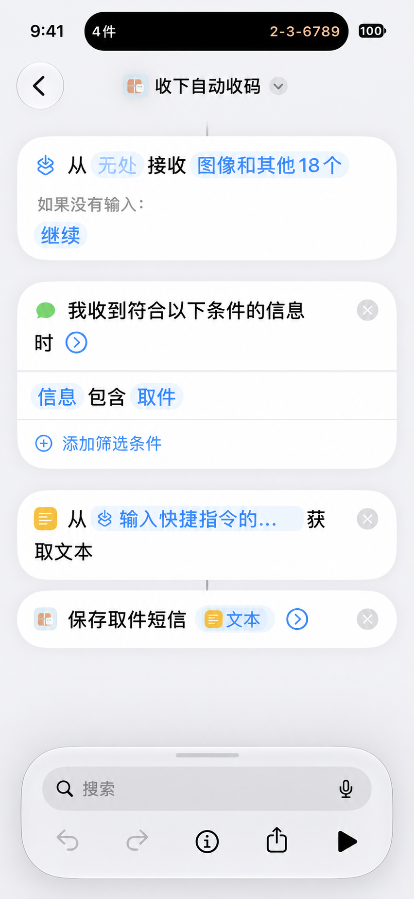

常见问题
如何添加取件文字？
复制取件信息，打开收下，点“粘贴”。也支持单独的 4 至 8 位数字取件码。
想自动添加，可在“设置 → 导入设置”开启“打开时识别剪贴板”。自动识别需要文字中带有“取件码”等标签；系统可能询问粘贴权限。
如何从截图添加？
先保存截图，再点首页“从截图添加”，一次最多选 5 张。核对识别结果后添加。1.2.7 结合取件码、地点和快递信息合并重复候选，同码不同地点保留供核对。原图不保存在收下中。
如何从其他 App 分享导入（1.2.7）？
在提供系统文字或图片分享的 App 中，选取取件文字或最多 5 张截图，点分享并选择“收下”；首次可能在“更多”中。
核对取件码和地点，可点“更正”修改，也可取消不需要的项目。保存后打开收下，所选内容会自动加入待取；小组件在主 App 接收后更新。取消不保存。
来源 App 没有系统分享入口时，继续使用粘贴或从截图添加。
如何设置短信自动收码？
点首页“短信自动收码”，从 iCloud 添加“收下自动收码”。已有且正常使用的快捷指令无需重设。
iOS 27：编辑“收下自动收码”，在“自动化”中选“信息”，条件设为“信息包含取件”，发件人不限。已有信息卡片可跳过添加。下方保留“获取文本”和“保存取件短信”两个操作。
iOS 17、18、26：在快捷指令中点“自动化”→“+”→“信息”，发件人不限。“信息包含”填“取件”，选择“立即运行”。添加“运行快捷指令”，选“收下自动收码”并保存。
1.2.6 起支持 iOS 16：按个人自动化方式配置，收到短信后需要确认运行，没有“立即运行”。App 内只显示当前系统对应的引导。
各版本都要检查：先接收符合条件的信息，再从“快捷指令输入”获取文本，最后将“文本”交给“保存取件短信”。
iOS 27 顶部的“从无处接收…”会在选择“快捷指令输入”后自动出现，不需要单独添加。

收到下一条真实取件短信后，检查是否自动添加。收下无法直接判断系统自动化是否设置成功。
没有自动添加怎么办？
先检查：自动化已启用，短信中包含“取件”。iOS 17、18、26 还需选择“立即运行”，运行“收下自动收码”。
在“收下自动收码”中，“获取文本”的输入应选“快捷指令输入”；“保存取件短信”的“短信内容”应选上一步的“文本”。
iOS 27 仅锁屏时不运行：在快捷指令的“信息”按钮 →“隐私”中检查锁定时运行权限。
隐藏设置入口后，去哪里找？
打开“设置 → 导入设置”，点“设置短信自动收码”。也可以点“重新显示首页设置入口”。隐藏入口不影响自动收码。
如何请人帮取？
点首页右上角“请人帮取”，选择包裹，再选发送方式。
普通文字：复制后粘贴到聊天，对方无需安装收下。包裹仍在待取中，取到后请手动标记。
收下交接包：对方需要安装收下，打开文件并确认后添加。完成系统分享后，你的包裹会移入“收下记录”，标记为“交给别人”；取消发送不改变记录。
两种方式只分享取件码、地点及快递信息。双方取件状态不会同步。
其他 App 的通知能自动添加吗？
请复制取件文字、保存截图后添加，或在 1.2.7 中使用系统分享入口主动导入。收下不会主动读取其他 App 的通知，尚未验证这些通知的自动导入。
如何使用小组件、锁屏和灵动岛？
在系统中添加收下小组件。iOS 17及以上的桌面组件可选地点或隐藏取件码；锁屏组件只显示件数。组件更新可能稍有延迟。
实时活动需要 iOS 16.1 及以上，灵动岛还需对应硬件。1.2.6 起在 iOS 16 提供显示全部待取的基础小组件，17 及以上保留筛选地点和隐藏码。1.2.7 已提交审核，是否可下载以 App Store 为准。
在“设置 → 锁屏与灵动岛”开启展示后，取件码会出现在锁屏和灵动岛，取完自动收起。灵动岛放不下时可长按查看。
每次实时活动最多 8 小时。到期或被移除后，保持开关开启，再打开收下即可恢复。到期后的锁屏卡片可能额外保留最多 4 小时。
自动功能会自行开启吗？
不会。剪贴板自动识别、锁屏与灵动岛展示默认关闭。短信自动收码也需你自行设置。更新 App 会保留原来的设置。
数据保存在哪里？
取件信息和记录只保存在本机，不上传服务器。无需账号，没有云同步。
如何删除记录？
打开“收下记录”，左滑记录并确认删除，删除后无法恢复。默认显示最近 30 天，可切换“全部”。右滑可将记录改回待取。
还是没有解决？
来信时请附上 iOS 版本、App 版本和问题现象；请不要发送包含真实取件码、手机号或地址的截图。